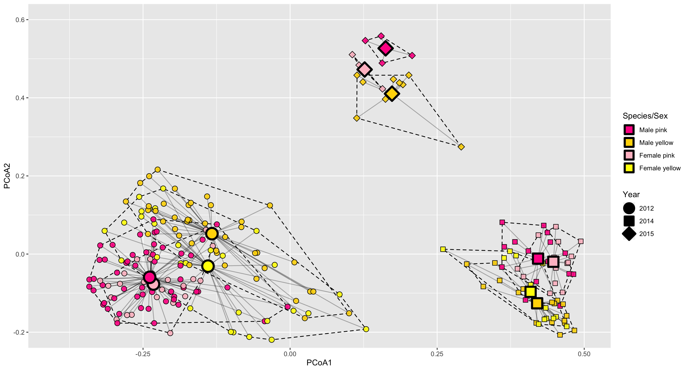

Evolvo Ergo Sum
Home
Blog
Photos
Quotes
About Me
(Untitled)
Publications
Peer-reviewed
Non Peer-reviewed
Classes
Applicazioni Bioinformatiche
Animal Tracking
Conservation Biology
Categories
All
(2)
Fieldwork
(1)
Galápagos
(1)
R
(1)
Stats
(1)
Trips
(1)
Variance
(1)
Back in Galápagos
Trips
Galápagos
Fieldwork
Back in the field, at last!
Oct 31, 2022
Giuliano Colosimo

Custom Multivariate Spread of Variance
R
Variance
Stats
An RStudio small project
Sep 29, 2022
Giuliano Colosimo
No matching items